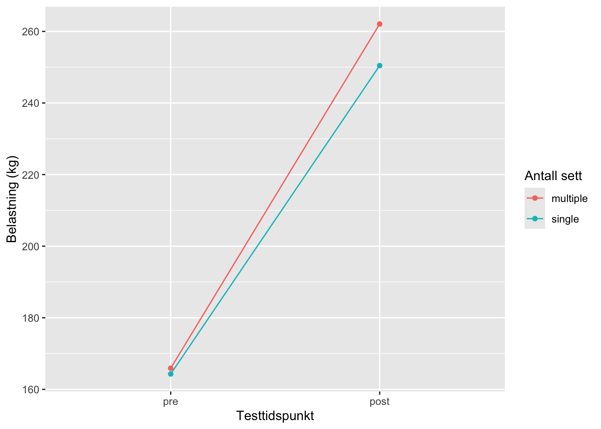

| Variable | N | Avg | SD |
|---|---|---|---|
| age | 34 | 22.8 | (3) |
| height | 34 | 174.8 | (10) |
| weight | 34 | 69.7 | (11.9) |
| Avg = Gjennomsnitt, SD = Standardavvik | |||
5 Assignment 5: Analyzing repeated measures experiments
5.1 Introduksjon:
Styrketrening er en viktig del av fysisk trening. Styrketrening er viktig i ett helseperspektiv ved å forebygge helsemessige utfordringer, dette kan for eksempel være muskelatrofi og svekket beinstyrke (Jespersen, Pedersen, and Beyer 2003). Styrketrening har også vist seg og være viktig for og forbedre fysisk prestasjon (B. R. Rønnestad and Mujika 2014). Maksimal styrketrening avhenger hovedsakelig av muskelmasse, og det er en rekke faktorer man kan påvirke for og øke muskelmasse og muskelstyrke. (Raastad et al. 2010). Hvordan fordele treningsvolum, frekvens og motstand optimalt kan variere fra person til person, her spiller genetikken også inn. Treningsvolum i styrkesammenheng vil si antall sett per muskelgruppe i løpet av en uke. (Grgic et al. 2022). Fokuset rundt treningsvolum og styrketrening har i lengre tid vært ett stort tema. Det er vist i tidligere studier at ett lavt treningsvolum har ført til samme forbedringer som moderat treningsvolum. (Mitchell et al. 2012). Det kan spekuleres om det også er forskjeller når det gjelder godt styrketrente personer og dårlig styrketrente personer. Der det kan tyde på at det vil kreves ett større stimuli jo høyere nivå du er på. (Hughes, Ellefsen, and Baar 2018).
Selv om vi de aller fleste vet at styrketrening er viktig for helsa, er det mange personer som ikke gjennomfører regelmessig styrketrening. Begrensinger kan være kunnskap og evnen til og klare og sette av tid og prioritere det. trene (Choi et al. 2017). Derfor kan det være veldig hensiktsmessig og kunne finne ut mer rundt hvor mye stimuli og treningsvolum som faktisk kreves for og klare og få de adaptasjonene vi vil og de positive helsemessige gevinstene. Vi ser også at veldig mange i samfunnet nå blir mer og mer stillesittende, kan dette skape store problemer for helsa til mange personer i samfunnet. Studier viser også at muskelmasse og muskelstyrke reduseres spesielt ved økende alder, og rundt 50 år spesielt. Ved redusert styrke kan det føre til en rekke negative konsekvenser. Det at man som eldre mister muskelmasse er en naturlig prosess, men ved gjennomføring av styrketrening kan vi bremse denne utviklingen. (Marzetti and Leeuwenburgh 2006).
Studiene (Rhea et al. 2002) viste at gruppen som trente tre sett per øvelse hadde en større økning i muskelstyrke sammenlignet med den gruppen som trente med bare ett sett. (Bent R. Rønnestad et al. 2007) fant også ut at tre sett hadde bedre resultater enn gruppen som trente ett sett. Basert på studier som er gjort tidligere har denne studien som mål og se på forskjeller i muskelstyrke og muskelmasse der en gruppe trener med ett sett og en annen gruppe kjører tre sett. Det gjennomføres på beina. Resultatene kan finne ut hvordan forskjellige treningsvolumer påvirker styrken vår og muskelmassen.
5.2 Metode
#Deltagere
I studien ble det rekruttert 41 mannlige og kvinnelige deltagere. Det var noen krav som måtte dekkes for og kunne være med i studien, og det var at personene måtte være mellom 18-40 år og ikke røyke. Personene kunne ikke ha trent mer enn en ukentlig styrkeøkt det siste året, samtidig som de ikke skulle ha noe nedsatt muskelstyrke ved noen tidligere skader eller lignende. De skulle heller ikke gå på noe medisiner som kunne påvirke eller forstyrre effektene for treningen. Etter studien ble sju personer tatt vekk fra dataanalysen fordi de ikke hadde gjennomført tilstrekkelig av de obligatoriske øktene (85%) i treningsintervensjonen.
5.3 Intervensjon:
Perioden ble gjennomført i løpet av 12-ukers styrketrening av hele kroppen. Underekstremitetene ble trent unilateralt. Dette gjør det mulig å gjennomføre forskjellig treningsvolum på beina. Det ble gjennomført lavt volum på det ene beinet og moderat på det andre. Det ble gjennomført ett sett på beinet som hadde lavt treningsvolum, og tre sett på det med moderat treningsvolum. Det ble gjennomført treningsøkter to til tre ganger i uken. Før hver treningsøkt gjennomførte personene en standardisert oppvarmingsprotokol. Den bestod av 5 minutter sykling på ergometersykkel, deretter ti repetisjoner av kroppsvektøvelser som push-ups, sit-ups, rygg hev og knebøy. Etter dette gjennomførte de ett sett med ti repetisjoner på 50% av 1RM (maksimalt løft) for hver styrkeøvelse. De tre beinøvelsene som ble gjennomført var unilateralt beinpress, leg-curl og kneekstensjon. Under teningsøkene hadde personene 90 til 180 sekunder pause mellom hver sett. Når det gjelder kosthold ble deltagerne bedt om å logge kosthold, samtidig som de fikk et standardisert energipåfyll, hhv. 0,16 g protein, 11,2 g karbohydrater og 0,5 g fett per kilo kroppsvekt. Dette var for og sikre at deltagerne fikk ett likt tilskudd av energi etter trening slik at ikke restitusjonen ble påvirket forskjellig på grunn av dette.
5.4 Målinger
I studien ble det brukt en repetisjon maksimum (1RM) i kneekstensjon som mål på maksimal styrke. Det ble gjennomført en standardisert oppvarming i forkant av mål på maksimal styrke. Denne oppvarmingen bestod av 10, 6 og 3 repetisjoner på en belastning tilsvarende 50, 75 og 85 % av antatt 1RM. Videre gjennomførte deltakeren fire til seks forsøk der de økte belastning per sett og til slutt til den belastninger der de ikke klart og løfte vekten. Den siste repetisjonen med fullt bevegelsesutslag ble da definert som 1RM.
Det ble også målt andel fettfri masse før og etter intervensjons perioden. Det ble mål ved bruk av dual-energy X-ray absorptiometry (DXA), (Lunar Prodigy, GE Healthcare, Oslo, Norge). Det var standardisert 48 timer opphold mellom siste styrkeøkt og DXA, samt at deltakerne skulle faste 2 timer før test og avstå fra krevende fysisk aktivitet de siste 48 timer.
5.5 Dataanalyse og statistikk
De statiske analysene ble gjort i R studio. Det ble gjennomført enkle lineære regresjonsmodeller for og se differansen mellom gruppene som gjennomførte ett sett kontra tre sett. Det ble sett på mager muskelmasse i beinet som trente ett sett kontra tre for og se endringer i muskelmasse. Signifikansnivået i studien ble satt til p < 0,05. Dette vil da si at resultater som viser til en p-verdi under dette blir ansett som statistisk signifikante.
5.6 Resultater
Beinet som trente tre sett hadde en større økning i fettfri masse enn beinet som trente ett sett. Forskjellen mellom gruppene oppgitt i gram var r m1results. Figure 5.1 viser hvor mange gram deltakerne økte i fettfri masse fra pre- til posttest. I 1RM benpress var det en gjennomsnittlig differanse oppgitt i kilo på r m2results. Figure 5.2 viser hvor mange kilo deltakerne økte i 1RM benpress fra pre- til posttest.


5.7 Diskusjon
Studien viste en tydelig forskjell i økningen av fettfri masse og 1RM benpress mellom gruppene som trente ett sett og tre sett per øvelse. Gruppens større fremgang med tre sett støtter teorien om et dose-responsforhold, der et høyere treningsvolum fører til bedre treningsadaptasjoner, som også er påvist av (Schoenfeld et al. 2017).
Det er likevel verdt å merke seg at deltakerne opplevde betydelig fremgang i både styrke og fettfri masse i begge ben, uavhengig av treningsvolum. Treningsprotokollen inkluderte to øvelser som belaster forsiden av låret, med en frekvens på 2-3 økter per uke. Dette resulterte i at det ukentlige volumet for beinet som trente ett sett per øvelse lå på 4-6 sett totalt. I tråd med dette fant (Androulakis-Korakakis, Fisher, and Steele 2020) at selv ett enkelt sett med 6-12 repetisjoner, utført med høy innsats 2-3 ganger per uke, kan føre til signifikante, men suboptimale, styrkeøkninger hos godt trente individer. Disse funnene antyder at et lavt volum kan gi effektive resultater, men et moderat volum gir mer optimale tilpasninger. For personer med begrenset tid til styrketrening kan dette være nyttig informasjon, da det viser at selv minimal innsats kan gi helsemessige og fysiske fordeler, selv om økt volum gir bedre resultater.
Androulakis-Korakakis, Patroklos, James P. Fisher, and James Steele. 2020. “The Minimum Effective Training Dose Required to Increase 1RM Strength in Resistance-Trained Men: A Systematic Review and Meta-Analysis.” Sports Medicine (Auckland, N.Z.) 50 (4): 751–65. https://doi.org/10.1007/s40279-019-01236-0.
Choi, Jaesung, Miyoung Lee, Jong-koo Lee, Daehee Kang, and Ji-Yeob Choi. 2017. “Correlates Associated with Participation in Physical Activity Among Adults: A Systematic Review of Reviews and Update.” BMC Public Health 17 (1): 356. https://doi.org/10.1186/s12889-017-4255-2.
Grgic, Jozo, Brad J. Schoenfeld, John Orazem, and Filip Sabol. 2022. “Effects of resistance training performed to repetition failure or non-failure on muscular strength and hypertrophy: A systematic review and meta-analysis.” Journal of Sport and Health Science 11 (2): 202–11. https://doi.org/10.1016/j.jshs.2021.01.007.
Hughes, David C., Stian Ellefsen, and Keith Baar. 2018. “Adaptations to Endurance and Strength Training.” Cold Spring Harbor Perspectives in Medicine 8 (6): a029769. https://doi.org/10.1101/cshperspect.a029769.
Jespersen, Jakob, Troels Gravers Pedersen, and Nina Beyer. 2003. “[Sarcopenia and strength training. Age-related changes: effect of strength training].” Ugeskrift for Laeger 165 (35): 3307–11.
Marzetti, Emanuele, and Christiaan Leeuwenburgh. 2006. “Skeletal muscle apoptosis, sarcopenia and frailty at old age.” Experimental Gerontology 41 (12): 1234–38. https://doi.org/10.1016/j.exger.2006.08.011.
Mitchell, Cameron J., Tyler A. Churchward-Venne, Daniel W. D. West, Nicholas A. Burd, Leigh Breen, Steven K. Baker, and Stuart M. Phillips. 2012. “Resistance Exercise Load Does Not Determine Training-Mediated Hypertrophic Gains in Young Men.” Journal of Applied Physiology 113 (1): 71–77. https://doi.org/10.1152/japplphysiol.00307.2012.
Raastad, Truls, Alexander Winsnes, Per Egil Refsnes, and Gøran Paulsen. 2010. Styrketrening - i Teori Og Praksis. Gyldendal undervisning.
Rhea, Matthew R., Brent A. Alvar, Stephen D. Ball, and Lee N. Burkett. 2002. “Three sets of weight training superior to 1 set with equal intensity for eliciting strength.” Journal of Strength and Conditioning Research 16 (4): 525–29.
Rønnestad, B. R., and I. Mujika. 2014. “Optimizing strength training for running and cycling endurance performance: A review.” Scandinavian Journal of Medicine & Science in Sports 24 (4): 603–12. https://doi.org/10.1111/sms.12104.
Rønnestad, Bent R., Wilhelm Egeland, Nils H. Kvamme, Per E. Refsnes, Fawzi Kadi, and Truls Raastad. 2007. “Dissimilar effects of one- and three-set strength training on strength and muscle mass gains in upper and lower body in untrained subjects.” Journal of Strength and Conditioning Research 21 (1): 157–63. https://doi.org/10.1519/00124278-200702000-00028.
Schoenfeld, Brad J., Jozo Grgic, Dan Ogborn, and James W. Krieger. 2017. “Strength and Hypertrophy Adaptations Between Low- vs. High-Load Resistance Training: A Systematic Review and Meta-analysis.” Journal of Strength and Conditioning Research 31 (12): 3508–23. https://doi.org/10.1519/JSC.0000000000002200.